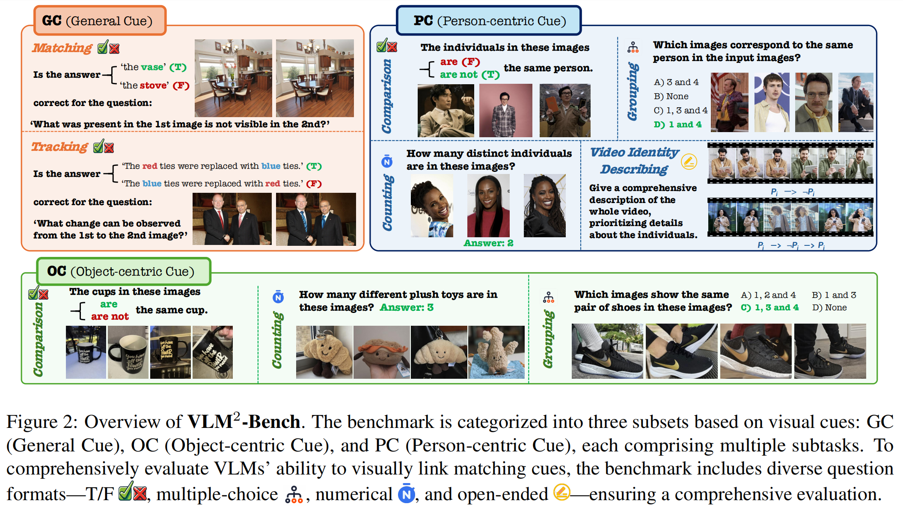
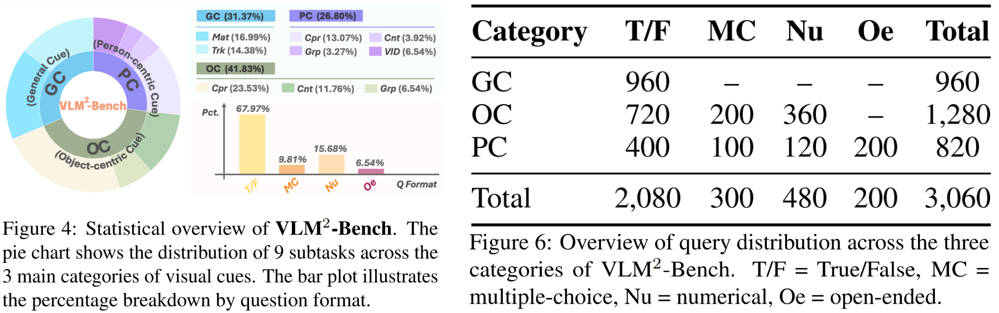

VLM2-Bench is designed to evaluate models' ability to visually link matching cues across multiple images and videos. It is organized into three main categories:
1.
General Cue (GC): Assessing matching and tracking of visual elements.
2.
Object-centric Cue (OC): Evaluating comparison, counting, and grouping of objects.
3.
Person-centric Cue (PC): Focusing on comparing, counting, grouping, and video identity describing of individuals.
The dataset comprises over 3,000 question-answer pairs generated via a semi-automated pipeline with human verification, covering various question formats such as True/False, multiple-choice, numerical, and open-ended queries.

Dataset Statistics
